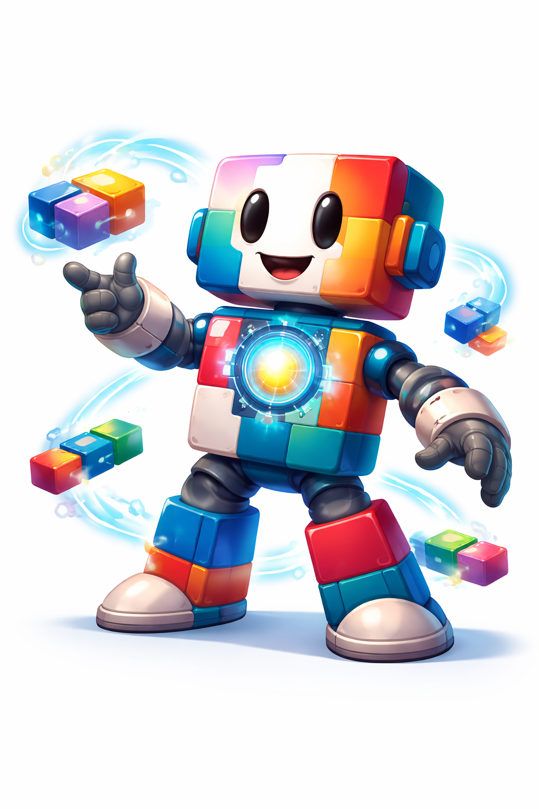

Arquitetura modular para Delphi: módulos por rota, DI e pipeline extensível, com integração nativa ao Horse.

Um ambiente organizado e estruturado onde todo o seu código reside com segurança.
O local exato onde lógicas independentes são criadas, encapsuladas e se conectam.
Totalmente plugável e modular, pensado para expandir organicamente com a sua aplicação.
"Nidus significa literalmente ninho, berçário ou foco. Na arquitetura de software, é o Hub central onde sua aplicação escala e ganha vida."
Oferece uma arquitetura maleável que acompanha o crescimento e a complexidade do seu código Delphi.
Serve como uma fundação extremamente robusta e elegante para qualquer padrão de servidor.
Traz padrões de design consagrados e soluções solidificadas para o ecossistema Delphi moderno.
Crie aplicações do lado do servidor robustas, poderosas e massivamente escaláveis sem ter que reinventar a roda.
Simplifique a manutenção, organizando toda a aplicação de ponta a ponta em módulos autocontidos.
Controle preciso do ciclo de vida das instâncias e um design voltado à maior testabilidade do seu software.
Intercepte fluxos livremente através de Guards e Middlewares independentemente de onde ocorrerem.
Compatibilidade nativa total com REST APIs, trazendo suporte imediato ao consagrado microframework Horse.
Veja como definimos rotas, injetamos middlewares e organizamos a cadeia de chamada arquitetural do Nidus.
unit App.Module;
interface
uses
Nidus.Module,
Nidus.Route.Abstract,
Nidus.Request,
NFe.Module;
type
TAuthGuard = class(TRouteMiddleware)
public
function Call(const AReq: IRouteRequest): Boolean; override;
end;
TAppModule = class(TModule)
public
function Routes: TRoutes; override;
end;
implementation
function TAuthGuard.Call(const AReq: IRouteRequest): Boolean;
begin
Result := (AReq.Username = 'user') and (AReq.Password = '123456');
end;
function TAppModule.Routes: TRoutes;
begin
Result := [
RouteModule('/nfe/:id', TNFeModule, [TAuthGuard])
];
end;
end.Nidus é gratuito e de código aberto. Mas para empresas que precisam de máxima segurança, ajudamos com um kit completo de desenvolvimento de APIs escaláveis.
Entre em contato conosco para saber mais sobre assinaturas, consultoria de especialistas, suporte corporativo on-site, treinamentos e sessões privadas no ecossistema Delphi.
Junte-se à comunidade de desenvolvedores e arquitetos que estão elevando o padrão de seus projetos em Delphi com Nidus.